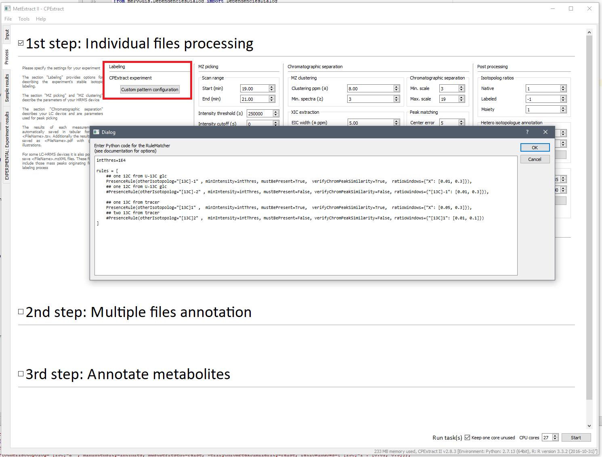
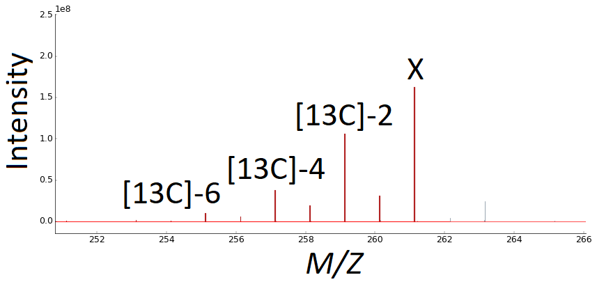

Bernhard Seidl, Rainer Schuhmacher, Christoph Bueschl
CPExtract: a novel software suite for tracer biotransformation experiments with unusual isotope patterns
Seidl et al. (2020) XXX DOI: XXX
The development of CPExtract was inspired by its predecessor MetExtract II, which is designed for detecting either native and uniformly isotopically labeled metabolites or to detect biotransformation products of native and uniformly isotopically labeled tracer compounds. While this strategy is great, the need for uniformly isotopically labeled compounds limits the tools applicability as many tracer compounds are not available as uniformly labeled compounds.
CPExtracts aims to overcome this limitation by removing the limitation that uniformly labeled biotransformation products are needed. The software has a specifically designed isotopolog search algorithm, that can search for virtually any isotopolog pattern in the data. This algorithm no needs native and uniformly labled metabolite forms, but rather searches for unusual isotopolog patterns that are characteristic for the biotransformation products procuded under the specific experimental conditions.
For example, malonic acid is a metabolite required by many polyketide synthases. If labeled malonic acid is provided to the organism under investigation, it will incorporate the labeled malonic acid and thus such polyketides will show a m/z+2*1.00335, m/z+4*1.00335 etc. isotopolog pattern. Such a specific isotopolog pattern can be specified in CPExtract and subsequently the software will search for all metabolites that posess this specific pattern thereby facilitating the search for polyketides that contain malonate.
Almost all of the main parameters (ppm deviation, peak picking, etc.) are the same as in MetExtract II. Thus, please refer to the documentation of MetExtract II for these parameters available here.
However, other than MetExtract II, CPExtract needs a ruleset that specify an unusual isotopolog pattern that shall be searched for. In order to be very flexible, this ruleset has to be specified as python code.
To edit the rules, click on the button 'Custom pattern configuration' in the 'Process' tab of CPExtract's main window (see screenshot below). A popup for the rules will appear.
The rules that specify the desired isotopolog pattern is specified via several rules that need to be saved to a Python list with the name 'rules'. There are several rules available that can be combined arbitrarily. All of them start from the main isotopolog, which is denoted X. This main isotopolog also specifies the origin for the search. Whenever a certain isotopolog relative to X shall be searched for, it has to be specified as a chemical formula with a distinct isotopolog in square-brackets. For example, the formula '[13C]2' specifies the isotopolog with 2 13C isotopes instead of two 12C isotoppes relative to X.
The following rules are available:
PresenceRule checks if a certain isotopolog relative to X is present, if the isotopolog has a highly similar chromatographic peak shape as X and if they have a certain ratio. The rule has the following parameters:
AbsenceRule checks if a certain isotopolog relative to X is not present or if it is below a certain ratio relative to X. The rule has the following parameters:
AnyIntensityRule checks if at least one of several isotopologs has at least a minimum signal intensity. The rule has the following parameters:
AllIntensityRule checks if all of the specified isotopologs have at least a minimum signal intensity. The rule has the following parameters:
Each rule is a python object that is modified via its parameters. For readability it is recommended to always specify the parameter name followed by the parameter value. Please note that several parameters that use the same value can also be specified via a parameter to be re-used.
Example:
#####################################
## Generic ruleset
##
## X is the isotopolog from which the isotopolog patterns are checked.
## Positive isotopolog definitions
## (e.g. [13C]1 defines the offset X+1.00335484)
## Negative isotopolog numbers can be used as well if the organism is uniformly 13C-labeled.
## (e.g. [13C]-1 defines the offset X-1.00335484)
##
## The rules must be saved in an array. All rules will then be applied sequentially during the search.
## An error in the code will deactivate the dialogbox. See documentation for further information
#####################################
intThres=1E4
rules = [
## Isotopologs that must not be present
AbsenceRule(otherIsotopolog="[13C]1", maxRatio=0.1),
## The X+13C isotopolog must not be present (intensity less than 0.1*X)
AbsenceRule(otherIsotopolog="[13C]2", maxRatio=0.1),
## The X+13C2 isotopolog must not be present (intensity less than 0.1*X)
## Minimum intensity rule
AnyIntensityRule(anyIsotopolog=["X", "[13C]-2"], minimumIntensity=1E5),
## One of the isotopologs X or X-13C2 must have an intensity value greater than 1E5
AllIntensityRule(allIsotopolog=["X", "[13C]-2"], minimumIntensity=intThres),
## One of the isotopologs X or X-13C2 must have an intensity vlaue greater than intThres (1E4), redundant
## Isotopologs that are verified as chromatographic peaks
PresenceRule(otherIsotopolog="[13C]-1" , minIntensity=intThres, mustBePresent=True, verifyChromPeakSimilarity=True, ratioWindows={"X": [0.1, 0.8], "[13C]-2": [0.1, 0.8]}),
## X-13C must be present with an intensity of at least intThres and it must have the same chroamtographic peak as X.
## Furthermore, it must have a ratio relative to X of at least 0.1 and maximum 0.8 and a ratio relative to X-13C2 of at least 0.1 and maximum 0.8
PresenceRule(otherIsotopolog="[13C]-2" , minIntensity=intThres, mustBePresent=True, verifyChromPeakSimilarity=True, ratioWindows={"X": [0.1, 2]}),
## X-13C2 must be present with an intensity of at least intThres and it must have the same chroamtographic peak as X.
## Furthermore, it must have a ratio relative to X of at least 0.1 and maximum 2
PresenceRule(otherIsotopolog="[13C]-3" , minIntensity=intThres, mustBePresent=True, verifyChromPeakSimilarity=True, ratioWindows={"[13C]-2": [0.1, 0.8], "[13C]-4": [0.1, 0.8]}),
## X-13C3 must be present with an intensity of at least intThres and it must have the same chroamtographic peak as X.
## Furthermore, it must have a ratio relative to X-13C2 of at least 0.1 and maximum 0.8 and a ratio relative to X-13C4 of at least 0.1 and maximum 0.8
PresenceRule(otherIsotopolog="[13C]-4" , minIntensity=intThres, mustBePresent=True, verifyChromPeakSimilarity=True, ratioWindows={"[13C]-2": [0.1, 0.8]}),
## X-13C4 must be present with an intensity of at least intThres and it must have the same chroamtographic peak as X.
## Furthermore, it must have a ratio relative to X-13C2 of at least 0.1 and maximum 0.8
PresenceRule(otherIsotopolog="[13C]-6" , minIntensity=intThres, mustBePresent=True, verifyChromPeakSimilarity=True, ratioWindows={"[13C]-4": [0.1, 0.8]})
## X-13C-6 must be present with an intensity of at least intThres and it must have the same chroamtographic peak as X.
## Furthermore, it must have a ratio relative to X-13C4 of at least 0.1 and maximum 0.8
]
The example matches the following isotopolog pattern (with an intensity deviation of up to 20%):

X is the most abundant signal with at least an intensity of 1E5. Additionally, no signals are present for [13C]1 and [13C]2. The signal that looks like it is a [13C]2 isotopolog is from a different, co-eluting compounds with a distinct m/z offset. Furthermore, [13C]-1, [13C]-2, [13C]-3, [13C]-4, and [13C]-6 are present and within the expected ratio windows relative to X or some other isotopolog.
Note: CPExtract is designed to work with native samples and isotopically labeled tracers or with uniformly labeled organism that are fed with native tracer compouns. Thus, it also support negative isotopologs such as [13C]-2.
Note: In most cases, CPExtract will not determine a meaningful number of carbon atoms or other elements used for labeling. Thus, during the annotation process the number of labeling isotopes should not be used and thus the parameter should be set to 'Don't use'